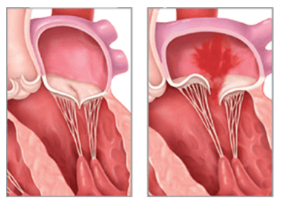

Mitral valve regurgitation
Symptoms--Shortness of breath, fatigue, dizziness, chest pain, rapid heartbeat, coughing, swelling in legs or feet, feeling like you might faint.
Causes--The mitral valve becoming too floppy (mitral valve prolapse), the ring of muscle around the valve becoming too wide, cardiomyopathy, endocarditis, congenital heart disease.
Treatment--You might not need treatment if you don't have symptoms, but if you do, treatment may include medications or surgery.
Complications--If left untreated, MR can lead to heart failure, pulmonary hypertension (high blood pressure in the lungs), and other complications.
